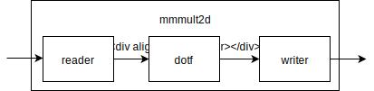

Matrix multiplication with Clash
Matrix multiplications happen to be useful in a very broad range of computational applications, such as computer graphics, artificial intelligence, and climate change research. At QbayLogic we help implement these (and more) applications on FPGAs using Clash. In this blogpost we will explore the intricacies of implementing matrix multiplications on FPGAs. We will explore the apparent differences between hardware and software development, how to use Clash to convert a “naive” algorithm to one suitable for an FPGA, and the use of Clash dependent types.
Our goal is to create a flexible yet efficient matrix multiplier. We want a pipelined architecture, polymorphic in its element type. That is, it should handle different number types (float, double, integers) even when the operations on these different types have different timing characteristics. We will see Clash is up for the task, providing a generic description for hardware polymorphic in timing and matrix dimensions. At the end of the post we’ll reflect on the experience and offer thoughts on the difficulties we encountered and how Clash could ease them in the future.
Setting up
The source code corresponding to this blogpost (including cabal files, etc.) can be found at github.com/clash-lang/TODO. Checkout the branch belonging to a certain stage in the tutorial. In order to execute the project, you need at least Cabal 2.2 and GHC 8.4. If your default compiler is GHC 8.4 you can simply run:
cabal new-run
Otherwise, you would point Cabal to the compiler you wish to use:
cabal new-run --with-compiler=/opt/ghc/8.4.1/bin/ghc
To run clash from this project, run:
cabal new-exec clash -- file1.hs file2.hs
Matrix multiplication
In order to define matrix multiplication, we first need to define a fundamental operation it uses: the dot-product. Given two vectors a and b both of length n, the dot product is:
$$ a \cdot b = \sum_{i=1}^n a_i b_i $$
or in Haskell:
dot a b = sum (zipWith (*) a b)
The matrix multiplication is then defined as:
$$ (AB)_{ij} = A_i \cdot (B^T)_j $$
where
- (AB)ij the element of AB located at the ith row and jth column.
- Ai denotes the ith row of A
- (BT)j denotes the jth column of B
To get a feeling for matrix multiplication, play around with an interactive example kindly provided by André Staltz (source):
Note that the example calculates the result partially sequentially and partially in parallel. Most algorithms would iterate the rows of the first matrix and for each step iterate the columns of the second. I.e., it would compute..
$$ 1 \cdot 2 + 2 \cdot 6 + 1 \cdot 1 = 15 $$ $$ 1 \cdot 5 + 2 \cdot 7 + 1 \cdot 8 = 27 $$ $$ 0 \cdot 2 + 1 \cdot 6 + 0 \cdot 1 = 6 $$ $$ 0 \cdot 5 + 1 \cdot 7 + 0 \cdot 8 = 7 $$ $$ 2 \cdot 2 + 3 \cdot 6 + 4 \cdot 1 = 26 $$ $$ 2 \cdot 5 + 3 \cdot 7 + 4 \cdot 8 = 63 $$
.. in order. In fact, many other strategies exist. A fully parallel algorithm would calculate each result cell “at the same time”. Other algorithms might opt execute n dot product in parallel, but implement its dot product with an accumulator only executing one multiplication each timestep.
Haskell implementation
Let’s make an implementation in native Haskell. The most obvious way to store a matrix in many computer programming languages is a 2D array / list. This makes sense for Haskell too, reflected in the following type:
type Vector = [Int]
type Matrix = [Vector]
For simplicity, we’ll assume a matrix only holds integers. The most straightforward matrix multiplication algorithm then looks like:
-- | Dot product (repeated)
dot
:: Vector
-> Vector
-> Int
dot vec1 vec2 =
sum (zipWith (*) vec1 vec2)
-- | Matrix/vector multiplication
mvMult
:: Matrix
-> Vector
-> Vector
mvMult mat vec =
map (dot vec) mat
-- | Matrix/matrix multiplication
mmMult
:: Matrix
-> Matrix
-> Matrix
mmMult mat1 mat2 =
map (mvMult (transpose mat2)) mat1
Matrix multiplication is an excellent candidate for hardware acceleration: every element in the result matrix is independently calculated. In fact, the Haskell implementation we just made does not impose a calculation order at all thanks to lazy evaluation. We could therefore compute the whole thing in parallel. Computing a matrix product in parallel is no easy task though. For a single matrix C one needs to compute ay*bx dot products, where each dot product computes ax multiplications and ax additions. Lumping these together gives us ay*bx*2ax operations, or a massive 270 million hardware elements for a 512x512 matrix.
Clash implementation
In order to compile our algorithm to a traditional hardware description language, we need to add length information to our code. Haskell lists are linked lists without (explicitly) stored length information, thus rendering them unsuitable for our purposes. As replacement, Clash offers vectors called Vecs. Vecs can store arbitrary data.
Clash is only slightly different from GHC. It enables some extensions and uses its own Prelude. Most functions defined in Haskell’s Prelude, you’ll find in Clash’s too. In fact, you’ll see that our implementation hardly changes. Let first redefine our types:
type Matrix m n = Vec m (Vec n Int)
This is conceptually the same as [[Int]], but with length information added. n is now the number of rows, while m indicates the number of columns. Let’s redefine dot first:
-- | Dot product
dot
:: KnownNat n
-- ^ Constraint 1: Store length information at runtime too
=> 1 <= n
-- ^ Constraint 2: Vectors must be at least of length one
=> Vec n Int
-> Vec n Int
-> Int
dot vec1 vec2 =
sum (zipWith (*) vec1 vec2)
Note that the only thing we changed is its type signature, while its implementation stayed exactly the same. Two constraints are added to the type signature:
KnownNat n: allows the implementation to access vector length information at runtime. This is needed for some implementations of functions associated withFoldable.1 <= n: requires both vectors to be at least of length one, needed forsum. In fact, all functions associated withFoldablerequire this. See the FAQ for further dicussion.
Besides that, lenghts are left completely polymorphic. The only thing Clash requires is that the lenghts are known when it compiles it down to VHDL. Only the very top of a design, and subsequently the whole tree it implicitly uses, needs to be monomorphic.
Compiling with Clash is similar to GHC, thus we need similar boilerplate to actually execute:
module Clash.Blog.MM.Main where
import Clash.Prelude
--
-- dot definition here..
--
main :: IO ()
main = do
let a = (1 :> 2 :> Nil)
let b = (5 :> 7 :> Nil)
putStrLn $ show $ dot a b
Then, simply compile and execute the resulting binary:
martijn@clashtop $ clash Main.hs
[1 of 1] Compiling Main ( Main.hs, Main.o )
Linking Main ...
martijn@clashtop $ ./Main
19
Next up is the matrix/vector multiplication:
-- | Matrix/vector multiplication
mvMult
:: KnownNat n
=> 1 <= n
-- ^ Constraints needed for `dot`
=> Matrix m n
-- ^ Matrix with `m` rows, `n` columns
-> Vec n Int
-- ^ Vector with `n` integers
-> Vec m Int
mvMult mat vec =
map (dot vec) mat
Again, note the actual implementation did not change. And last but not least, matrix matrix multiplication:
-- | Matrix/matrix multiplication
mmMult
:: an ~ bm
-- ^ Number of columns of matrix A must be
-- equal to the number of rows in matrix B.
=> 1 <= bm
=> KnownNat bn
=> KnownNat bm
=> Matrix am an
-> Matrix bm bn
-> Matrix am bn
mmMult mat1 mat2 =
map (mvMult (transpose mat2)) mat1
And yet again we see the implementation does not actually change over the native Haskell one. The only thing we need to do is add length information to our types to satisfy the Clash compiler.
Splitting hardware
In the previous section we built a fully parallel, synthesizable matrix multiplication algorithm. This description works fine for small matrices, but quickly grows until it doesn’t fit on even the largest FPGAs. We don’t want a fully serial implementation either, which would underutilize our hardware. Ideally, we would like to write a “scalable” algorithm whose parameters can be set in such a way that it perfectly matches our target architecture. This doesn’t seem easy, but it is doable in Clash as we’ll show in this section.
Like numbers, matrices form a semiring. Crudely speaking, some “type” is a semiring as soon it supports addition and multiplication and inhibits “number-like” properties such as a zero-element, a one-element, and distribution over addition. Interestingly, the following holds:
$$ A = \begin{bmatrix} a & b & c & d \\ e & f & g & h \\ i & j & k & l \\ m & n & o & p \end{bmatrix} AA = \begin{bmatrix} \begin{bmatrix} a & b \\ e & f \end{bmatrix} & \begin{bmatrix} c & d \\ g & h \end{bmatrix} \\ \begin{bmatrix} i & j \\ m & n \end{bmatrix} & \begin{bmatrix} k & l \\ o & p \end{bmatrix} \end{bmatrix} $$
$$ B = \begin{bmatrix} \alpha & \beta & \gamma & \delta \\ \epsilon & \zeta & \eta & \theta \\ \iota & \tau & \kappa & \lambda \\ \mu & \nu & \omicron & \pi \end{bmatrix} BB = \begin{bmatrix} \begin{bmatrix} \alpha & \beta \\ \epsilon & \zeta \end{bmatrix} & \begin{bmatrix} \gamma & \delta \\ \eta & \theta \end{bmatrix} \\ \begin{bmatrix} \iota & \tau \\ \mu & \nu \end{bmatrix} & \begin{bmatrix} \kappa & \lambda \\ \omicron & \pi \end{bmatrix} \end{bmatrix} $$
then if we define
$$ A \cong AA \texttt{ and } B \cong BB $$
then the following holds:
$$ A \cdot B \cong AA \cdot BB $$
where the ‘dot’ is matrix multiplication. This pattern holds for larger and smaller matrices alike, pretty cool! Thus, if we’re able to build a fully sequential matrix multiplication algorithm (doing exactly one multiplication per time step), we could combine it with our previously built fully parallel one. (Revisit the interactive example, imagining that number are matrices if you want to!). If the sizes of these submatrices would be configurable, we would have essentially built a scalable matrix multiplier. This is exactly what we’re going to do.
We first need to slightly modify our Matrix type, so it can store arbitrary data: matrices or integers. We simply extend it as such:
type Matrix m n a = Vec m (Vec n a)
Up to this point, we have been defining functions without timing specifications. That is, it would just compile to a hardware component finishing in a single time step. Timesteps in Clash are modeled using Signals; an infinite stream of values. Our new function will be defined using these. We will build a component that takes two matrices, calculates the result of their multiplication, and finally returns the result after some time. To distinguish between “no input” and “input”, and “no output” and “output” we’ll wrap them in Maybe.
Finally, before we define our new function, we need a way to talk about the sizes of the various (sub)matrices. The defacto standard in mathematics is to define m as the number of rows, and n as the number of columns. We’ll extend this idea in the following way if X is a matrix and X ≅ XX:
X_m: number of rows inXX_n: number of columns inXXX_m: number of rows inXX(number of submatrices in vertical direction)XX_n: number of colums inXX(number of submatrices in horizontal direction)XX_sm: number of rows in each submatrix ofXX.XX_sn: number of columns in each submatrix ofXX.
With that being set up, let’s have a look at the type of our new function:
mmmult2d
:: forall a_m a_n b_m b_n aa_m aa_n bb_m bb_n aa_sm aa_sn bb_sm bb_sn
-- ^ Explicit definition of type variables in order to use them in function body
. SystemClockReset
-- ^ Clock and reset lines for registers
=> KnownNat aa_m
=> KnownNat aa_n
=> KnownNat bb_m
=> KnownNat bb_n
=> KnownNat aa_sm
=> KnownNat aa_sn
=> KnownNat bb_sm
=> KnownNat bb_sn
-- Enforce proper matrix dimensions:
=> 1 <= a_m
=> 1 <= a_n
=> 1 <= b_m
=> 1 <= b_n
=> a_n ~ b_m
-- Constrain submatrices:
=> a_m ~ (aa_m * aa_sm)
=> a_n ~ (aa_n * aa_sn)
=> b_m ~ (bb_m * bb_sm)
=> b_n ~ (bb_n * bb_sn)
=> 1 <= aa_sm
=> 1 <= aa_sn
=> 1 <= bb_sm
=> 1 <= bb_sn
=> bb_sm ~ aa_sn
-- Allow user to pass submatrix sizes:
=> SNat aa_m
-- ^ Number of rows in submatrix of AA
-> SNat aa_sn
-- ^ Number of columns in submatrix of AA
-> SNat bb_n
-- ^ Number of columns in submatrix of BB
-- Matrices to multiply:
-> Signal System (Maybe (Matrix a_m a_n Int, Matrix b_m b_n Int))
-- Result returned after calculating for a while:
-> Signal System (Maybe (Matrix a_m b_n Int))
mmmult2d aa_sn aa_m bb_n matrixAA matrixb = …
Almost the whole type signature is taken up by constraints. This might look tedious at first, but it actually helps to prevent a lot of errors such as passing a wrongly dimensioned matrix. We’ll later see we could omit the type signatures altogether if we wanted to.
The function boils down to four actual arguments. Three submatrix demensions:
=> SNat aa_m
-- ^ Number of rows in submatrix of AA
-> SNat aa_sn
-- ^ Number of columns in submatrix of AA
-> SNat bb_n
-- ^ Number of columns in submatrix of BB
And a single argument maybe passing two matrices:
-> Signal System (Maybe (Matrix a_m a_n Int, Matrix b_m b_n Int))
We’ll later see how to forge signals in order to test our function, and how to use SNats to pass our desired (sub)matrix demensions.
A lot of the times when we work with Signals in Clash, it is convenient to express ourselves in terms of Mealy (or Moore) machines. Instead of thinking about a stream of values evolving over time, we’d express ourselves in terms of a state and a function applied to that state yielding an updated state and an output. In Mealy machines, both updating and yielding an output is combined into a single function, while Moore separates these into two functions. We’ll use the former in this tutorial.
Without resorting to blockrams just yet, at the very least we need to store three things in our state:
- The matrices
AAandBBgiven as an input at some earlier point during the computation; - The partially calculated result matrix
RR; - A counter to keep track of how far we’ve progressed.
We could define this counter in many ways. Preferably though, we would like to keep it as simple as possible. Recall an instance of matrix multiplication:
$$ \begin{bmatrix} a & b \\ c & d \end{bmatrix} \begin{bmatrix} e & f \\ g & h \end{bmatrix} = \begin{bmatrix} ae + bg & af + bh \\ ce + dg & cf + dh \end{bmatrix} = \begin{bmatrix} i & j \\ k & l \end{bmatrix} $$
We could choose to calculate the submatrix multiplications as follows:
$$ \texttt{ae, ce, af, cf, bg, dg, bh, dh} $$
At each timestep, we would therefore read from or write to:
$$
AA:
\texttt{a, c, a, c, b, d, b, d} \\ BB:
\texttt{e, e, f, f, g, g, h, h} \\ RR:
\texttt{i, k, j, l, i, k, j, l} \
$$
In this configuration, we could think of the indices indicating the various elements as follows:
AA_m: row index increases by one every cycleBB_n: column index increases after full cycle ofAA_mAA_n: column index increases after full cycle ofBB_nBB_m: row index increases after full cycle ofBB_nRR_m: row index increases by one every cycleRR_n: column index increases after full cycle ofAA_m
Therefore, we can express our counter as a triple:
type Counter = (Index aa_n, Index bb_n, Index aa_m)
.. counting from right to left, with carry and wrap-around. In case of our 2x2 example, it would count like:
$$ (0, 0, 0) \\ (0, 0, 1) \\ (0, 1, 0) \\ (0, 1, 1) \\ (1, 0, 0) \\ \dots $$
Allowing us to store the indices of all three matrices as a single triple:
(aColI, _, aRowI) = counter
(bRowI, bColI, _ ) = counter
(_, rColI, rRowI) = counter
Implementations for this counter (for tuples, triples, quadtuples, ..) have been given in Clash.Blog.MM.WrapCount. Convenience functions for matrices can be found in Clash.Blog.MM.Matrix. Implementations are out of scope for this blogpost, but you’re welcome to check them out by cloning the repository given in the introduction.
import Clash.Blog.MM.Matrix
import Clash.Blog.MM.WrapCount
With all this said, we can finally start implementing mmmult2d. Because we decided to use mealy, we’ll let mmmult2d set the stage: setup an initial state for the mealy machine, and split the input matrices into congruent matrices with submatrices:
mmmult2d aa_sn aa_m bb_n ab =
mealy mmmult2dmealy state ab'
where
-- Take input matrices, and split them into smaller ones. The outer fmap
-- maps over each value in the signal, the inner fmap applies the function
-- `splitab` on the inner value of Maybe (if it is not Nothing).
ab' = fmap (fmap splitab) ab
-- Initial state for mealy machine:
state =
( Nothing -- No matrices saved yet
, minBound -- Counter at zero
, emptyMatrix nullMatrix -- Matrix with zero-matrices
)
-- Split matrices into matrix with submatrices
splitab (a, b) =
( msplit a :: Matrix aa_m aa_n (Matrix aa_sm aa_sn Int)
, msplit b :: Matrix bb_m bb_n (Matrix bb_sm bb_sn Int)
)
All that’s left now is to implement the mealy machine doing the actual calculation. Our mealy machine, mmmult2dmealy, matches on three distinct cases:
- No input, no matrices stored; do nothing.
- Input given; resets counter and stores matrices given as input.
- Otherwise; calculate. Pick off at the point indicated by the indices.
Notice that the following implementation does not have an explicit type. Clash will infer its type simply by the function’s definition, including size constraints:
-- | Same as (!!) but guaranteed to succeed as any
-- value in `Index n` can never exceed `n-1`.
index
:: KnownNat n
=> Vec n a
-> Index n
-> a
index = (!!)
-- | mmmult2dmealy describes a single caclulation step. It returns a result only
-- when it's ready. To be used as mealy machine.
mmmult2dmealy (Nothing, _, _) Nothing =
-- No input nor state, do nothing:
((Nothing, minBound, emptyMatrix nullMatrix), Nothing)
mmmult2dmealy _ matrices@(Just _) =
-- Input; reset progress so far (if any)
((matrices, minBound, emptyMatrix nullMatrix), Nothing)
mmmult2dmealy (matrices@(Just (matrixAA, matrixBB)), counter, matrixRR) _ = (state', output)
-- Continue calculating, return result if ready
where
-- If we're at the counter's maximum, we're done after this cycle
done = counter == maxBound
-- Increase counter tuple by one. Wrap around if maximum is reached.
counter' = succWrap counter
-- Calculate new state; if we're done, reset it.
state'
| done = (Nothing, counter', emptyMatrix nullMatrix)
| otherwise = (matrices, counter', matrixRR')
-- Output only if we're done calculating
output
| done = Just (mmerge matrixRR')
| otherwise = Nothing
-- Determine order of fetching from A or B and storing it in R.
(aColI, _, aRowI) = counter
(bRowI, bColI, _ ) = counter
(_, rColI, rRowI) = counter
-- Fetch submatrices and partial result
subA = (matrixAA `index` aRowI) `index` aColI
subB = (matrixBB `index` bRowI) `index` bColI
subR = (matrixRR `index` rRowI) `index` rColI
-- Calculate new partial result, store it in matrix R
subR' = madd subR (mmMult subA subB)
matrixRR' = replaceMatrixElement matrixRR rRowI rColI subR'
And that’s it for implementing a scalable matrix multiplier. To summarize: we can multiply matrices of any size and choose the number of integer multipliers by adjusting the size of the submatrices.
Pipelining dot
Any circuit’s performance is determined by its critical path: the path between two registers incurring the maximum delay in the whole circuit. In the circuit developed so far we’re still using the matrix multiplication from the very first part of this blogpost. This chains multiple multiply-add operations together, clearly inducing a very long path:
Simply adding a register after each f would greatly reduce the length of the critical path. This however changes the behavior of the circuit significantly, as the output of the first f would only be present at the input of the second f at timestep t+1, while the other inputs of the second f still arrive at t+0. Instead, we need to add registers to the inputs of every f, progressively more further down the pipeline, as such:
This new dot-operator would functionally behave the same way as its non-pipelined counterpart, bar a delay between in the input and output. Clash allows us to model this kind of behavior with delayed signals. Let’s first consider the definition of a non-delayed multiply-add as displayed in the first image:
multiplyAdd
:: SystemClockReset
=> Signal System (Int, Int)
-> Signal System Int
-> Signal System Int
multiplyAdd ab c =
c + a*b
where
(a, b) = unbundle ab
Pretty straightforward, hopefully. It’s a bit more complicated than vanilla Haskell thanks to the use of Signals and tuples therein. We’ll later see why we used a tuple in the first place. For now, let’s focus on implementing dot using multiplyAdd. Using Signals obfuscates it a bit, but multiplyAdd is in fact of the form a -> b -> b making it suitable for a simple foldr.
dot
:: SystemClockReset
=> Signal System (Vec n Int)
-> Signal System (Vec n Int)
-> Signal System Int
dot a b =
foldr multiplyAdd (pure 0) ab
where
-- <$> is another notation for fmap. fmapping zip over a signal leaves
-- a signal of 1-argument functions. To apply an argument within the
-- signal use we use <*>. This is a common pattern in Clash.
ab :: Vec n (Signal System (Int, Int))
ab = unbundle $ zip <$> a <*> b
So far so good. So what about the registers? Inserting a single a single register after each multiply-add is relatively easy using delayed signals and the function delayed, which will insert enough registers to match its type context. In our case, this is single register inferred by calculating (n + 1) - n ~ 1.
dMultiplyAdd
:: SystemClockReset
=> DSignal System n (a, a)
-> DSignal System n a
-> DSignal System (n+1) a
dMultiplyAdd ab c =
delayed (repeat 0) result
where
result = c + a * b
(a, b) = unbundle ab
Unfortunately, we just broke our definition of dot. The delayed version of multiplyAdd, dMultiplyAdd, is of the form a -> b -> c due to differing delays between the two arguments and the result. Still, in this case we could use the result of type c as a second argument to another application of dMultiplyAdd. In fact, if we would manually unroll the definition of foldr in dot, we would end up with a perfectly fine Haskell program! Of course, we cannot, since we do not know the number of times we would have to unroll it when writing the function. It could be three times, it could be a thousand, depending on the context.
Luckily, Clash offers a way out: dependently typed folds. Dependently typed folds can help whenever one wants to fold a function g :: a -> b -> c, where g a c would type-check. dfold asks its users two things:
To provide a type-level function function which, given the an index l, provides the type for a circuit folded l times.
To provide a function (
go) which is given three things: [1] anSNatindicating how fardfoldis in the folding process; [2] thelth element of the vector given todfold; and [3] the output of thel-1th application ofgo. The function should return something of the type predicted by the type level function.
Given this, it promises us a type-checking construct.
Type level functions can be implemented by providing an Apply instance for it. Instances need a specific type we can match on, so we’ll build a new one:
data MultAddFoldedTypeGen (n :: Nat) (f :: TyFun Nat *) :: *
We don’t care about a runtime representation, so we’ll skip an actual implementation. n corresponds to the delay our function starts with even before folding the given function even once. f represents the function taking an integer l and returning whatever type we wish: * (read f :: TyFun Nat * as f :: Nat -> *). We can see the l being used in the instance:
type instance Apply (MultAddFoldedTypeGen n) l =
DSignal System (n + l) Int
As dMultiplyAdd incurs a delay of 1 and starts with a delay n, the delay after folding l times is n + l. This concludes the first part required for dfold. For the second part, we need to implement a function chaining two parts of the pipeline together:
go
:: SystemClockReset
=> SNat l
-- ^ Number of times folded already
-> DSignal System d (Int, Int)
-- ^ Tuple to be multiplied
-> DSignal System (d + l) Int
-- ^ Input from previous element in pipeline
-> DSignal System (d + l + 1) Int
go (l@SNat) ab c =
dMultiplyAdd (delayed (repeat (0, 0)) ab) c
Finally, we can use our type level function MultAddFoldedTypeGen and glue function go in an application of dfold as such:
-- | Pipelined version of dot
dotf
:: forall d n
. SystemClockReset
=> KnownNat n
=> DSignal System d (Vec n Int)
-> DSignal System d (Vec n Int)
-> DSignal System (d + n) Int
dotf a b =
dfold
-- Type level function to supply type of /l/th folding
(Proxy :: Proxy (MultAddFoldedTypeGen d))
-- Chain function:
go
-- Start value of pipeline:
(pure 0)
-- Every processing element gets an external input:
(DBundle.unbundle $ zip <$> a <*> b)
where
go = ...
Although this journey so far has given us great insight into how Clash handles types and how to manually build pipelines, it feels like this should have been handled by higher-order functions in the first place. In the source code of this blog you’ll therefore find a slightly other version, where our pipelining has been generalized as two functions foldrp and foldrpp. In the source code you’ll therefore find a much simpler implementation of dotf:
dotf
:: SystemClockReset
=> KnownNat n
=> DSignal System d (Vec n Int)
-> DSignal System d (Vec n Int)
-> DSignal System (d + n) Int
dotf a b =
foldrp
-- Function:
(\(a', b') c -> a'*b' + c)
-- Defaults for output/input of function:
0 (0, 0)
-- Vector to fold over:
(zip <$> a <*> b)
-- Start value:
(pure 0)
To summarize, we built a pipelined version of dot with the help of delayed signals. We used type level functions to express our type evolving when unfolding our use of foldr. Lastly, we built saw the use of higher-order functions - in this case foldrp - can immensely help easy of implementation and readability.
Putting it together again
We can’t use dotf in our definition of mmmult2dmealy anymore, as the former is described at a signal level, while the latter is described at a value level. A strategy to handle this is to make multiple mealy machines, chained together in a combining function. In our case, we would designate a component with producing the right input for our dotf function, and another component processing the results of that pipeline:

Our new function mmmult2dreader is an almost exact copy of our previously defined mealy machine. Instead of doing matrix multiplications though, it produces rows and columns fed to dotf:
-- | mmmult2dreader stores (sub)matrices and yields a row/column of a submatrix
-- every cycle.
mmmult2dreader (Nothing, _) Nothing =
-- No input nor state, do nothing:
((Nothing, minBound), Nothing)
mmmult2dreader _ matrices@(Just _) =
-- Input; reset progress so far (if any)
((matrices, minBound), Nothing)
mmmult2dreader (matrices@(Just (matrixAA, matrixBB)), counter) _ =
-- Continue calculating, return result if ready.
(state', Just (rowA, colB))
where
-- Calculate new state; if we're done, reset it.
state'
| counter == maxBound = (Nothing, succWrap counter)
| otherwise = (matrices, succWrap counter)
-- Determine order of fetching from A or B and storing it in R.
(aColI, _, aRowI, saRowI, _) = counter
(bRowI, bColI, _, _, sbColI) = counter
-- Fetch submatrices and their row/column
subA = (matrixAA `index` aRowI) `index` aColI
subB = (matrixBB `index` bRowI) `index` bColI
rowA = subA `index` saRowI
colB = (transpose subB) `index` sbColI
Now that our reader function yields Maybe results, we need to change our pipelined dot function to process (and produce) Maybe values as well, which we present below. Note that we use undefined as an equivalent of xxxx in VHDL/Verilog. In fact, this is exactly what the Clash compiler will produce. If all is well though, both our runtime and hardware will never actually use this result. To improve error reporting on runtime we could replace undefined with error "some message". Be careful to only use this for values you’re convince your code will never use, as an error has simply no meaning on hardware.
dotfm
:: SystemClockReset
=> KnownNat n
=> DSignal System d (Maybe (Vec n Int, Vec n Int))
-> DSignal System (d + n) (Maybe Int)
dotfm ab =
foldrp
-- Function:
multAdd
-- Defaults for output/input of function:
Nothing undefined
-- Vector to fold over:
(uncurry zip . fromJust <$> ab)
-- Start value; Nothing on no input, Just 0 on input:
((const 0 <$>) <$> ab)
where
multAdd _ Nothing = Nothing
multAdd (a, b) (Just c) = Just $ a*b + c
The last component we need to write is the component processing the output of our pipelined dot function. This component closely mirrors the structure of our reader. It resets its state if it does not receive an input, and yields its results as soon as it has gathered enough results from the dot function.
-- | mmmult2dwriter stores result (sub)matrices and processes results from
-- the dotf pipeline. It yields results whenever it has gathered enough results.
mmmult2dwriter _ Nothing =
-- No input, reset state
((emptyMatrix nullMatrix, minBound), Nothing)
mmmult2dwriter (matrixRR, counter) (Just dotfResult) = (state', output)
where
state' = (matrixRR'', succWrap counter)
(matrixRR'', output)
| counter == maxBound = (emptyMatrix nullMatrix, Just matrixRR')
| otherwise = (matrixRR', Nothing)
-- Calculate new partial result, store it in matrix R
(_, rColI, rRowI, srRowI, srColI) = counter
subR = (matrixRR `index` rRowI) `index` rColI
subR' = alterMatrixElement subR srRowI srColI (+dotfResult)
matrixRR' = replaceMatrixElement matrixRR rRowI rColI subR'
All that’s left to do is to tie the three components together in mmmult2d:
-- [1] Reader stage
readerOutput :: Signal System (Maybe (Vec aa_sn Int, Vec bb_sm Int))
readerOutput = register Nothing $ mealy mmmult2dreader (Nothing, counter) ab'
-- [2] Dot product pipeline
dotfOutput :: Signal System (Maybe Int)
dotfOutput = register Nothing $ toSignal $ dotfm $ fromSignal readerOutput
-- [3] Writer stage
writerOutput :: Signal System (Maybe (Matrix aa_m bb_n (Matrix aa_sm bb_sn Int)))
writerOutput = mealy mmmult2dwriter (emptyMatrix nullMatrix, counter) dotfOutput
And that’s it! In the repository you’ll find a slightly more generalized function which can handle an number type, instead of restricting it to only Ints. You’ll also find a version reading and writing its results from and to blockRAM, which you would find in a more realistic scenario.
Conclusion and reflection
We’ve implemented a pipelined matrix multiplication algorithm, parameterizable in such a way that we can easily make a time/space trade-off. During the implementation we’ve seen a lot constructs in Clash. This second will go over some critiques.
Delayed signals: what are they really?
Delayed signals are an enormously helpful tool in Clash’s toolbox, but it is unclear what the exact semantics of a delayed signal actually are. In our design we’ve used it in a pipelined manner, that is: we treat a delayed function f as if it were a non-stateful function but simply with a delay between its in- and output. This is not enforced by the type system in any way though (unclear if that’s even remotely possible), and we can think of at least four other meanings of “delayed”:
A delay of four could mean inputs and outputs are only valid every 4nth cycle. That is, after supplying an input one should wait for a few clock for an answer. This is incidentally what we do dynamically using a Maybe type in our top-level function
mmult2d.A delay of four could simply mean the first inputs are ignored and the very first four outputs should be ignored. This could have been used for storing partial results in our matrix multiplication algorithm: the dot product only yields valid results after some time anyway.
A delay of four could mean the first four inputs are accepted, but the first four outputs should be ignored. For example, imagine a simple moving average function. Internally it maintains a buffer containing a number of elements. A new incoming element will “push” the oldest value out of its buffer. The output is the average of all values. This would potentially (depending on your goal) an invalid output for the first few averages.
A delay of four could mean the first four inputs are ignored, but the outputs are already valid.
In fact, it’s not even clear what a “delay” means for a signal on its own. I’d argue that what we actually want to express is a notion of “scheduled validness” or its converse “scheduled undefinedness”. I.e., a signal’s validness could then be defined as the pseudocode:
KnownNat p => KnownNat k => forall n. Signal dom (n*p + k) a
Where p is a period, k is an offset and n is a natural number. The first valid value for this signal is the expressed by k, while it would also produce a valid value for k+p, k+2p, … . An actual definition of such as “scheduled signal” could look like:
data SSignal (period :: Nat, offset :: Nat) (dom :: Domain) a = ...
where a “normal” Signal could be expressed as:
type Signal (dom :: Domain) a = SSignal (1, 0) dom a
Various methods could be implemented to make it easy to work with and synchronize otherwise out-of-step signals:
-- | Sync offsets by buffering
syncOffset
:: SSignal dom (pb, oa + o) b
-> SSignal dom (pa, oa) a
-> SSignal dom (pa, oa + o) a
syncOffset _ = ...
-- | Sync periods by buffering
syncPeriod
:: p ~ LCM pa pb
=> p ~ npa * pa
=> p ~ npb * pb
=> SSignal dom (pa, o) a
-> SSignal dom (pb, o) b
-> SSignal dom (p, p+o) (Vec npa a, Vec npb b)
syncPeriod a b = ...
-- | Synchronize signals's periods and offsets
sync a b =
syncPeriod (syncOffset a b) b
Scheduling information could even be used to automatically enabled and disable circuits, depending on how they’re combined with other slower circuits.
All in all, Clash could do with much better integrated support for “delayed” signals. Having this concept at a type level could prove very useful indeed. Most importantly, it could give the programmer a sense of security knowing the compiler checked for synchronization mismatches. Perhaps a future blogpost could work something out..
Pipelining: we need a stdlib
Clash pipelining capabilities are quite powerful. In combination with delayed signals dependently typed folds are capable of providing a relatively easy way of inserting registers at the right places. While existing functions in Clash cover this, specialized functions for pipelining circuits could provide more a more comfortable way of dealing with dependently typed folds. While writing this blogpost, we developed two (see repository):
-- | Pipelined foldl. Function itself is not pipelined, but a single register
-- will be added after it.
foldrp
:: forall dom a b startDelay n
. forall gated synchronous
. HiddenClockReset dom gated synchronous
=> KnownNat n
=> (a -> b -> b)
-- ^ f
-> b
-- ^ Default output
-> a
-- ^ Default input
-> DSignal dom startDelay (Vec n a)
-- ^ Vector to fold over
-> DSignal dom startDelay b
-- ^ Start value
-> DSignal dom (startDelay + n) b
foldrp = ...
and
-- | Pipelined foldl. Function itself might be pipelined.
foldrpp
:: forall dom a b procDelay startDelay n
. forall gated synchronous
. HiddenClockReset dom gated synchronous
=> KnownNat n
=> KnownNat procDelay
=> (forall d. DSignal dom d a -> DSignal dom d b -> DSignal dom (d + procDelay) b)
-- ^ Possibly pipelined function
-> a
-- ^ Default
-> DSignal dom startDelay (Vec n a)
-- ^ Vector to fold over
-> DSignal dom startDelay b
-- ^ Start value
-> DSignal dom (startDelay + (n*procDelay)) b
foldrpp f = ...
while this helped a lot, the fact that we had to write it ourselves is less than ideal. Clash should provided constructs like these in an officially supported or its own library. In a next blogpost, we will develop a set of these functions.
FAQ
What is KnownNat n?
Like Num, KnownNat is a typeclass. This class does not implement any interesting functions, but allows code to access compile-time numbers (such as the length of a vector) at runtime. If you forget to add a constraint, you might get an error looking like:
src/Main.hs:55:3: error:
Could not deduce (KnownNat n) arising from a use of ‘sum’
from the context: Num a
bound by the type signature for:
dot :: forall a (n :: Nat). Num a => Vec n a -> Vec n a -> a
at src/Main.hs:(49,1)-(53,6)
Possible fix:
add (KnownNat n) to the context of
the type signature for:
dot :: forall a (n :: Nat). Num a => Vec n a -> Vec n a -> a
|
55 | sum $ zipWith (*) a b
| ^^^^^^^^^^^^^^^^^^^^^
In this case, sum needs to access the number n at runtime, but the function dot didn’t require it.
Why does sum only accept non-empty vectors?
If you accepted the challenge to convert the non-synthesizable code to code that can be, you might have seen the following error when redefining dot:
src/Main.hs:55:3: error:
• Couldn't match type ‘1 <=? n’ with ‘'True’
arising from a use of ‘sum’
• In the expression: sum $ zipWith (*) a b
In an equation for ‘dot’: dot a b = sum $ zipWith (*) a b
• Relevant bindings include
b :: Vec n a (bound at src/Main.hs:54:7)
a :: Vec n a (bound at src/Main.hs:54:5)
dot :: Vec n a -> Vec n a -> a (bound at src/Main.hs:54:1)
|
55 | sum $ zipWith (*) a b
| ^^^^^^^^^^^^^^^^^^^^^
sum apparently expects a vector of at least a length of 1! Or as GHC puts it: Couldn't match type ‘1 <=? n’ with ‘'True’. This might seem strange, as the implementation on lists works just fine. This is an unfortunate historic artifact of Haskell: sum is defined in terms of Foldable, which was formed way before the relevancy of dependent types. Many functions where defined partially, meaning they will emit an error if given an empty list. Clash has the ability to enforce these lengths statically. It could therefore choose to implement these partial functions, giving up some powerful static promises. It has therefore been decided to only allow vectors with at least one element, rendering all functions on Foldable completely defined.
Solutions come in roughly three forms:
Add
1 <= nas a constraint to your function. This makes the caller responsible for providing “correct” vectors. In case of a dot product, this is not perfect though: the mathematical definition perfectly allows for empty vectors.Hack your way around it. In case of
dot, this means appending a single zero to the result ofzipWith, i.e.:sum $ 0 :> zipWith (*) a b. This is perfectly fine, but might incur a very small performance hit both in simulation and synthetization.Define your own
sum, not based onFoldable.
What does Couldn't match type ‘ax’ with ‘by’ mean?
If you forgot to include ax ~ by you might have seen an error saying Clash figured out that ax and by should be equal, but that it can’t prove it.
src/Main.hs:47:43: error:
• Couldn't match type ‘ax’ with ‘by’
‘ax’ is a rigid type variable bound by
the type signature for:
mmult :: forall a (ay :: Nat) (ax :: Nat) (by :: Nat) (bx :: Nat).
Num a =>
Vec ay (Vec ax a) -> Vec by (Vec bx a) -> Vec ay (Vec bx a)
at src/Main.hs:(37,1)-(44,22)
‘by’ is a rigid type variable bound by
the type signature for:
mmult :: forall a (ay :: Nat) (ax :: Nat) (by :: Nat) (bx :: Nat).
Num a =>
Vec ay (Vec ax a) -> Vec by (Vec bx a) -> Vec ay (Vec bx a)
at src/Main.hs:(37,1)-(44,22)
Expected type: Vec ay (Vec by a)
Actual type: Vec ay (Vec ax a)
• In the second argument of ‘map’, namely ‘a’
In the expression: map (\ ar -> map (dot ar) (transpose b)) a
In an equation for ‘mmult’:
mmult a b = map (\ ar -> map (dot ar) (transpose b)) a
• Relevant bindings include
b :: Vec by (Vec bx a) (bound at src/Main.hs:46:9)
a :: Vec ay (Vec ax a) (bound at src/Main.hs:46:7)
mmult :: Vec ay (Vec ax a)
-> Vec by (Vec bx a) -> Vec ay (Vec bx a)
(bound at src/Main.hs:46:1)
|
47 | map (\ar -> map (dot ar) (transpose b)) a
| ^
Although not quite obvious, this constraint is requested by dot (in this case), which asks for its given vectors to be of equal length. Of course, this is exactly what we want! Matrix multiplications don’t make sense if ax differs from by.